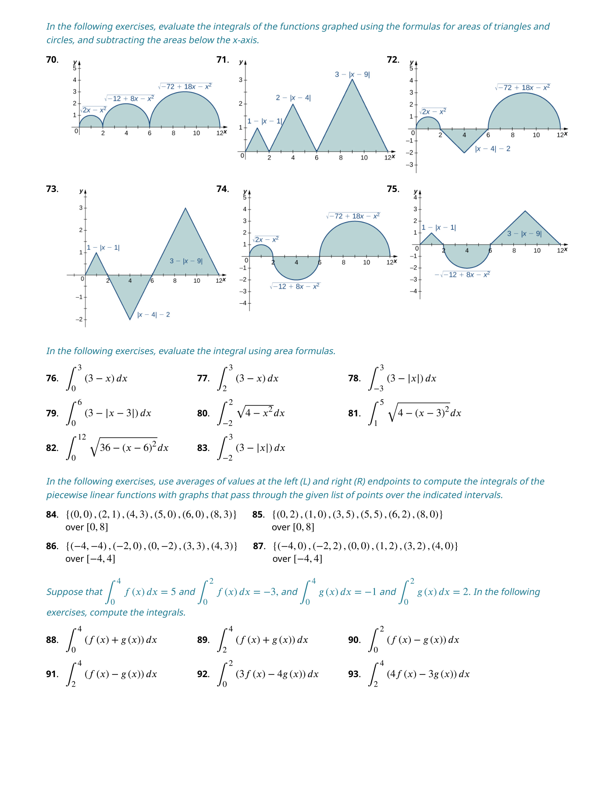
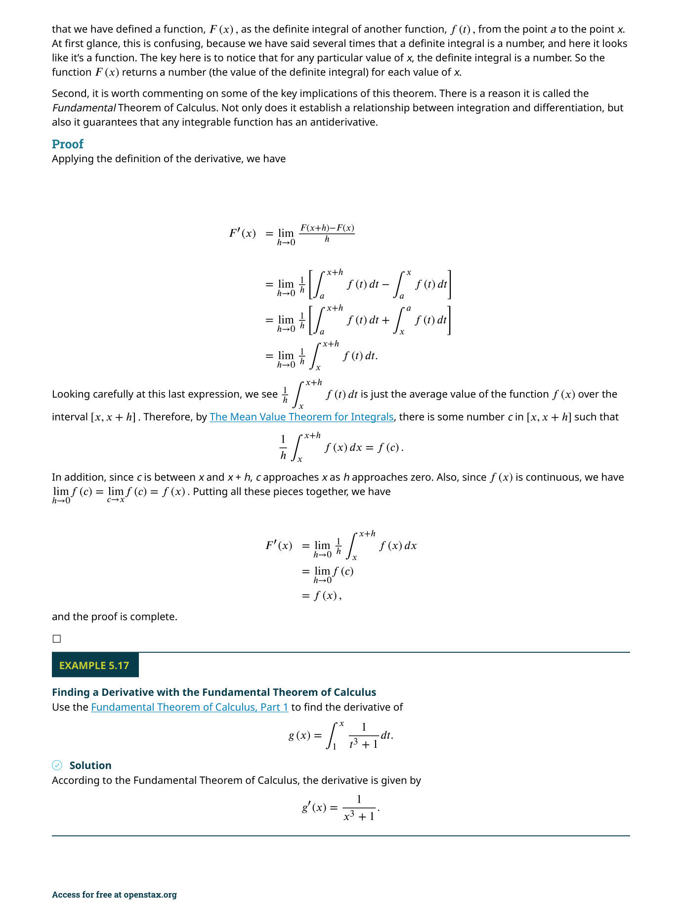
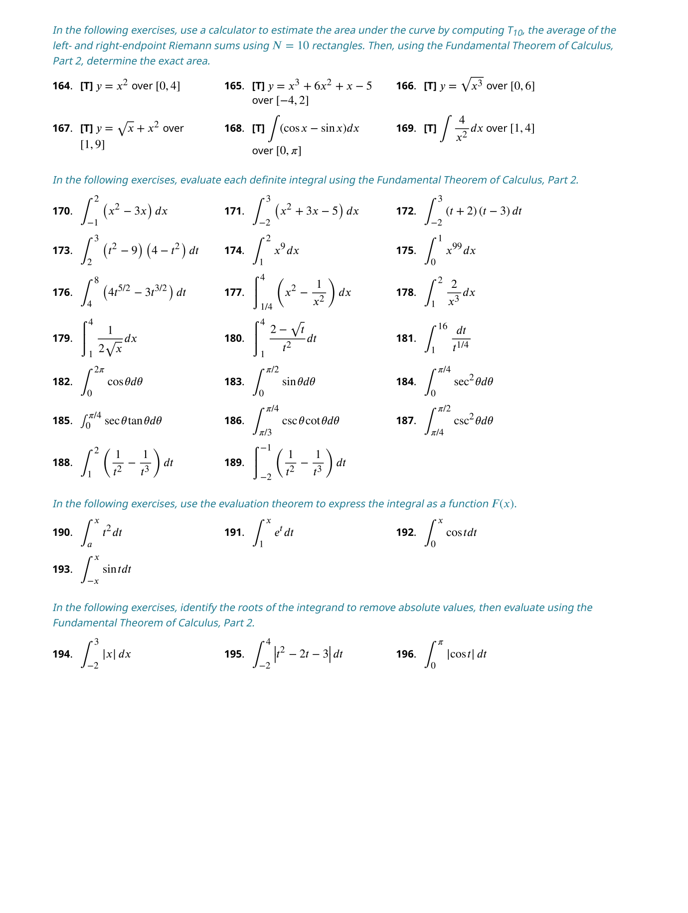
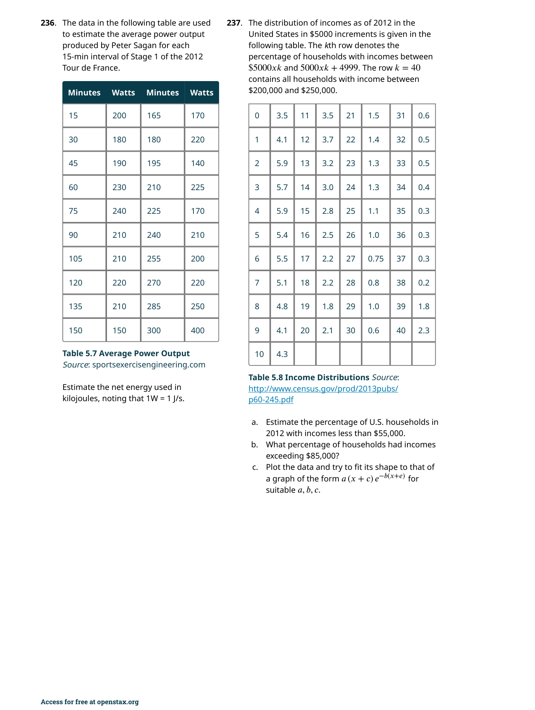
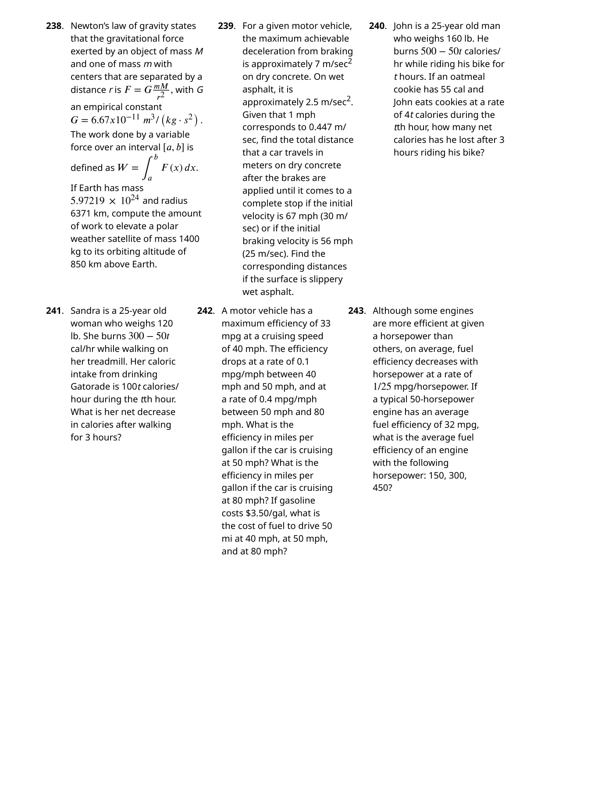
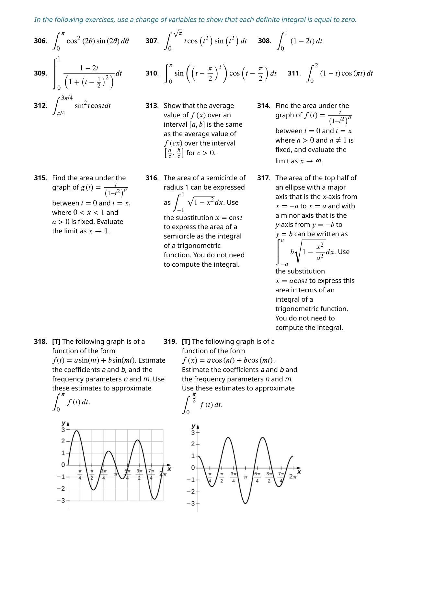
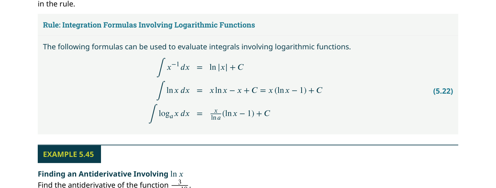
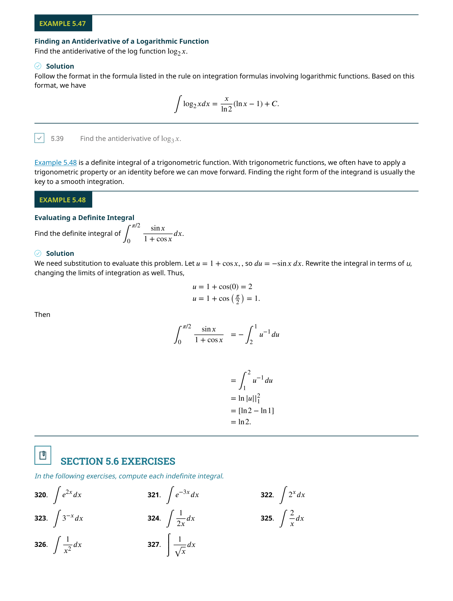

冪級數（Power Series）
📌 本章要解決的核心問題
如果一個函數不是多項式，我們能否用「無窮多項式」來表示它？答案是可以——這就是冪級數（power series）的核心思想。冪級數讓我們將超越函數（如 $e^x$、$\sin x$、$\ln x$）寫成無窮多項的加總，從而可以用簡單的多項式運算來微分、積分、和近似計算。本章從冪級數的定義和收斂性出發，逐步建立泰勒級數（Taylor series）的完整理論，最後展示冪級數在解微分方程、計算非初等積分、以及物理應用中的強大威力。
🔑 關鍵概念（10 條）
- 冪級數的定義：$\sum_{n=0}^{\infty} c_n (x-a)^n$——以 $a$ 為中心的「無窮多項式」
- 收斂半徑 $R$：冪級數在 $|x-a| < R$ 內絕對收斂，在 $|x-a| > R$ 發散
- 收斂區間：端點 $(a-R, a+R)$ 需單獨檢驗——可能收斂也可能發散
- 幾何級數是基礎：$\frac{1}{1-x} = \sum_{n=0}^{\infty} x^n$（$|x|<1$）是許多冪級數展開的起點
- 逐項微分與積分：冪級數可以在收斂區間內逐項微分和積分，不收斂半徑改變
- 泰勒級數：$f(x) = \sum_{n=0}^{\infty} \frac{f^{(n)}(a)}{n!} (x-a)^n$——用函數的各階導數決定係數
- 麥克勞林級數：$a=0$ 時的特例——$e^x = \sum_{n=0}^{\infty} \frac{x^n}{n!}$
- 泰勒餘項定理：$R_n(x) = \frac{f^{(n+1)}(c)}{(n+1)!} (x-a)^{n+1}$——量化近似的誤差
- 冪級數的唯一性：若 $f$ 在 $a$ 處有冪級數展開，則它必定是泰勒級數
- 二項式級數：$(1+x)^r = \sum_{n=0}^{\infty} \binom{r}{n} x^n$——適用於任意實數 $r$
🧭 邏輯鏈
冪級數定義與收斂 → 幾何級數展開 → 冪級數的加減乘與逐項微積分 → 泰勒/麥克勞林級數展開 → 餘項定理與誤差估計 → 二項式級數 → 解微分方程 → 計算非初等積分
6.1 冪級數與函數（Power Series and Functions）
冪級數（power series）是微積分中最優雅的概念之一
以 $x=a$ 為中心的冪級數具有以下形式：
其中 $c_0, c_1, c_2, \ldots$ 是係數（coefficients），均為常數。約定 $(x-a)^0 = 1$ 即使 $x=a$。
冪級數最關鍵的性質是：對於某些 $x$ 值它收斂（得到一個有限的數），對於其他 $x$ 值它發散。舉例來說，幾何級數 $\sum_{n=0}^{\infty} x^n = 1 + x + x^2 + \cdots$ 在 $|x| < 1$ 時收斂到 $\frac{1}{1-x}$，但在 $|x| \geq 1$ 時發散。這個簡單的例子揭示了冪級數的核心特徵——存在一個收斂半徑（radius of convergence）$R$，級數在中心附近的對稱區間內收斂。

收斂的三種可能
對於一個以 $x=a$ 為中心的冪級數 $\sum_{n=0}^{\infty} c_n (x-a)^n$，收斂定理（Theorem 6.1）告訴我們恰好有以下三種可能之一：
情況 i：級數只在 $x=a$ 處收斂——對於所有 $x \neq a$ 均發散。此時收斂半徑 $R=0$。例如 $\sum_{n=0}^{\infty} n!\, x^n$ 只在 $x=0$ 處收斂。
情況 ii：級數對所有實數 $x$ 收斂——收斂半徑 $R=\infty$。例如 $\sum_{n=0}^{\infty} \frac{x^n}{n!}$（這其實是 $e^x$ 的麥克勞林級數）。
情況 iii：存在一個正數 $R > 0$，使得級數在 $|x-a| < R$ 時絕對收斂，在 $|x-a| > R$ 時發散。在端點 $x = a \pm R$ 處需要單獨檢驗——可能收斂也可能發散。整個收斂區間（interval of convergence）可能是 $(a-R, a+R)$、$[a-R, a+R)$、$(a-R, a+R]$ 或 $[a-R, a+R]$。
看待冪級數最有效的方式是把它想像成一個「次數無限大的多項式」。這個類比極其有用：多項式可以逐項加減、逐項乘開、逐項微分和積分——冪級數在收斂區間內同樣可以。事實上，整個第 6 章的技術（從 6.2 節的代數運算到 6.4 節的微分方程求解）都是建立在這個類比之上。
如何求收斂半徑與區間
在實際操作中，我們通常使用比值檢驗（ratio test）來確定收斂半徑。步驟如下：對於 $\sum c_n (x-a)^n$，計算 $\rho = \lim_{n\to\infty} \left|\frac{c_{n+1}(x-a)^{n+1}}{c_n (x-a)^n}\right| = |x-a| \cdot \lim_{n\to\infty} \left|\frac{c_{n+1}}{c_n}\right|$。令 $\rho < 1$ 來求得 $|x-a| < R$，其中 $R = 1 / \lim_{n\to\infty} |c_{n+1}/c_n|$。然後單獨檢驗端點 $x = a \pm R$。
📝 範例
📝 範例 6.1：求收斂區間與半徑求 $\displaystyle\sum_{n=1}^{\infty} \frac{(x-1)^n}{n}$ 的收斂區間與半徑。
解：這是以 $a=1$ 為中心的冪級數，其中 $c_n = \frac{1}{n}$。
使用比值檢驗：$\displaystyle \rho = \lim_{n\to\infty} \left|\frac{(x-1)^{n+1}/(n+1)}{(x-1)^n/n}\right| = |x-1| \cdot \lim_{n\to\infty} \frac{n}{n+1} = |x-1|$。
令 $\rho < 1$ → $|x-1| < 1$ → 收斂半徑 $R = 1$。
檢驗端點：當 $x=0$（即 $x-1=-1$）：級數變成 $\sum (-1)^n/n$——這是交錯調和級數，收斂。當 $x=2$（即 $x-1=1$）：級數變成 $\sum 1/n$——這是調和級數，發散。
因此收斂區間為 $[0, 2)$（即 $0 \leq x < 2$），半徑 $R=1$。
用幾何級數表示函數
回想第 5 章的關鍵結果：幾何級數 $\sum_{n=0}^{\infty} ar^n = \frac{a}{1-r}$（當 $|r|<1$）。這是冪級數應用的最基礎工具——只要把一個函數寫成 $\frac{a}{1-r}$ 的形式，就能立即得到它的冪級數展開。
例如，$\frac{1}{1+x} = \frac{1}{1-(-x)} = \sum_{n=0}^{\infty} (-1)^n x^n$（$|x|<1$）；$\frac{1}{1-x^2} = \sum_{n=0}^{\infty} (x^2)^n = \sum_{n=0}^{\infty} x^{2n}$（$|x|<1$）。這個技巧可以推廣到更複雜的分式函數。

比值檢驗只能告訴你 $|x-a| < R$ 內絕對收斂、$|x-a| > R$ 發散。但當 $|x-a| = R$（端點），比值檢驗給出 $\rho=1$，結論為「不確定」。此時你必須將端點值代入原級數，用積分檢驗、交錯級數檢驗、或比較檢驗來判斷。忽略端點檢驗是初學者最常見的扣分原因。
在範例 6.2 和 6.3 中，課本展示了如何將函數如 $\frac{1}{1+x^2}$、$\frac{2x}{1-x^2}$ 等用幾何級數展開，以及如何透過代數操作（如部分分式分解）將複雜的有理函數轉化為已知的幾何級數形式。這些技巧為後續章節中利用冪級數微分和積分奠定了堅實的基礎。
📝 範例
📝 範例 6.3：用冪級數表示函數用冪級數表示 $f(x) = \dfrac{1}{1+x^2}$，並求收斂區間。
解：注意到 $\dfrac{1}{1+x^2} = \dfrac{1}{1-(-x^2)}$。將 $r = -x^2$ 代入幾何級數公式：
$\displaystyle \frac{1}{1+x^2} = \sum_{n=0}^{\infty} (-x^2)^n = \sum_{n=0}^{\infty} (-1)^n x^{2n} = 1 - x^2 + x^4 - x^6 + \cdots$
收斂條件：$|r| = |-x^2| < 1$ → $|x| < 1$。當 $|x| = 1$ 時，級數變成 $\sum (-1)^n$，發散。因此收斂區間為 $(-1, 1)$。
6.2 冪級數的性質（Properties of Power Series）
現在我們已經知道如何為某些函數找到冪級數表示
冪級數的組合（Combining Power Series）
定理 6.2（冪級數的組合）告訴我們：若 $\sum c_n x^n = f(x)$ 和 $\sum d_n x^n = g(x)$ 在共同區間 $I$ 上收斂，則：
- $\sum (c_n \pm d_n) x^n = f(x) \pm g(x)$ 也在 $I$ 上收斂
- 對於任意整數 $m \geq 0$ 和常數 $b$，$\sum c_n (b x^m)^n = f(b x^m)$ 在滿足 $b x^m \in I$ 的 $x$ 上收斂
- $\sum b c_n x^{m n} = b f(x^m)$ 在滿足 $x^m \in I$ 的 $x$ 上收斂
這些規則看似簡單，但威力巨大。從一個已知的展開（例如 $\frac{1}{1-x} = \sum x^n$），我們可以通過代入 $x \to -x$、$x \to x^2$、$x \to 3x$ 等操作，迅速得到大量相關函數的展開。
📝 範例
📝 範例 6.5：從已知展開構造新冪級數利用 $\dfrac{1}{1-x} = \sum_{n=0}^{\infty} x^n$（$|x|<1$），求 $f(x) = \dfrac{3x}{1+x^2}$ 的冪級數展開。
解：$f(x) = 3x \cdot \dfrac{1}{1-(-x^2)} = 3x \sum_{n=0}^{\infty} (-x^2)^n = 3x \sum_{n=0}^{\infty} (-1)^n x^{2n} = \sum_{n=0}^{\infty} 3(-1)^n x^{2n+1}$。
展開：$f(x) = 3x - 3x^3 + 3x^5 - 3x^7 + \cdots$。
收斂條件：$|-x^2| < 1$ → $|x| < 1$。收斂區間為 $(-1, 1)$。
對於形如 $\frac{P(x)}{Q(x)}$ 的有理函數（其中 $Q(x)$ 可分解），先做部分分式分解，將它寫成若干個 $\frac{A}{1-r(x)}$ 的線性組合，然後對每一項用幾何級數展開。這個組合技巧幾乎可以處理所有有理函數的冪級數展開。
冪級數的乘法與柯西乘積
定理 6.3（冪級數乘法）說明兩個冪級數可以像多項式一樣相乘，結果稱為柯西乘積（Cauchy product）：若 $f(x) = \sum_{n=0}^{\infty} c_n x^n$ 和 $g(x) = \sum_{n=0}^{\infty} d_n x^n$ 在共同區間 $I$ 上收斂，則
這個公式看起來有點嚇人，但它的意思很簡單：乘積中 $x^n$ 的係數就是所有滿足 $k + (n-k) = n$ 的 $c_k \cdot d_{n-k}$ 之和。這和多項式乘法的分配律完全一致——只是現在有無窮多項。
逐項微分與逐項積分——冪級數的超能力
如果說冪級數有一個「殺手級應用」，那一定是逐項微分和逐項積分（Theorem 6.4）。這個定理告訴我們：若 $f(x) = \sum_{n=0}^{\infty} c_n (x-a)^n$ 在 $(a-R, a+R)$ 內收斂，則：
這個定理的革命性在於：它讓我們能對那些沒有初等反導數的函數進行精確的積分計算。例如 $\int e^{-x^2}\,dx$ 不能用初等函數表示，但可以展開為冪級數後逐項積分。

📝 範例
📝 範例 6.9–6.10：逐項微分與積分已知 $\dfrac{1}{1-x} = \sum_{n=0}^{\infty} x^n$（$|x|<1$）。
(a) 透過逐項微分求 $g(x) = \dfrac{1}{(1-x)^2}$ 的冪級數。
(b) 透過逐項積分求 $h(x) = \ln(1+x)$ 的冪級數。
解 (a)：注意到 $\frac{d}{dx}\left(\frac{1}{1-x}\right) = \frac{1}{(1-x)^2}$。逐項微分：
$\displaystyle \frac{1}{(1-x)^2} = \frac{d}{dx} \sum_{n=0}^{\infty} x^n = \sum_{n=1}^{\infty} n x^{n-1} = \sum_{n=0}^{\infty} (n+1) x^n = 1 + 2x + 3x^2 + 4x^3 + \cdots$（$|x|<1$）。
解 (b)：$\ln(1+x) = \int_0^x \frac{1}{1+t}\,dt$。而 $\frac{1}{1+t} = \sum_{n=0}^{\infty} (-1)^n t^n$（$|t|<1$）。逐項積分：
$\displaystyle \ln(1+x) = \int_0^x \sum_{n=0}^{\infty} (-1)^n t^n\,dt = \sum_{n=0}^{\infty} \frac{(-1)^n}{n+1} x^{n+1} = x - \frac{x^2}{2} + \frac{x^3}{3} - \cdots$（$-1 < x \leq 1$）。
逐項積分時，級數從 $n=0$ 開始，積分後產生一個常數項 $C$。你必須用原函數在展開點的值來確定 $C$！例如上面 $\ln(1+0)=0$，所以 $C=0$。很多學生直接寫出級數而忘記處理 $C$，導致答案差一個常數。
冪級數的唯一性
定理 6.5（冪級數的唯一性）是一個看似簡單但極其深刻的結論：如果在某個包含 $a$ 的開區間內，$\sum c_n (x-a)^n = \sum d_n (x-a)^n$，則對所有 $n$，$c_n = d_n$。換句話說，一個函數在給定點 $a$ 處最多只有一種冪級數展開。這個定理保證了無論你用什麼方法（幾何級數、微分、積分、代入...）找到的展開，只要是正確的，就必須是泰勒級數。
多項式在全局都有定義且處處相等；但兩個冪級數即使在某區間內相等，它們在區間外的行為可能完全不同。冪級數等式的成立範圍受限於收斂區間——這是冪級數操作中最容易被忽略的條件。每次進行冪級數的代數操作時，你都需要追蹤收斂區間的變化。
本章的開頭問題——樂透彩金的選擇——在範例 6.7 中得到了完整的解答。透過將未來每年的現金流折現為等比級數，我們可以精確計算出：以 5% 年利率計算，20 年每年 150 萬美元的現值約為 1869 萬美元，而無限期每年 100 萬美元的現值恰好是 2000 萬美元。這個應用完美展示了冪級數（特別是幾何級數）在金融數學中的核心地位。
6.3 泰勒與麥克勞林級數（Taylor and Maclaurin Series）
前面兩節我們主要通過幾何級數來獲得冪級數展開
泰勒級數的推導——為什麼係數是 $\frac{f^{(n)}(a)}{n!}$？
這是本章最需要深刻理解的推導過程。假設函數 $f(x)$ 在 $x=a$ 處可以展開為冪級數：
我們希望係數 $c_n$ 和 $f$ 在 $a$ 處的性質掛鉤。首先，代入 $x=a$：所有含 $(x-a)$ 的項都消失，得到 $f(a) = c_0$。所以 $c_0 = f(a)$。
接著，對展開式逐項微分一次：
代入 $x=a$：$f'(a) = c_1$，所以 $c_1 = f'(a)$。
再微分一次：
代入 $x=a$：$f''(a) = 2c_2$，所以 $c_2 = \frac{f''(a)}{2} = \frac{f''(a)}{2!}$。
繼續這個過程，對於一般的 $n$，微分 $n$ 次後代入 $x=a$，所有次數低於 $n$ 的項都被微光了，次數高於 $n$ 的項仍含 $(x-a)$ 因子而消失，只剩下 $n!$ 乘以 $c_n$：$f^{(n)}(a) = n! \cdot c_n$，因此：
泰勒級數的思想極其優美：它用函數在單一一點 $a$ 處的所有資訊（函數值、一階導數、二階導數……直至無窮階）來重建整個函數。一階近似 $f(a) + f'(a)(x-a)$ 是切線；二階近似加上 $\frac{f''(a)}{2}(x-a)^2$ 捕捉了彎曲程度；更高階的項逐次修正，使近似越來越精確。這就是為什麼泰勒級數被稱為「用多項式逼近函數的終極方法」。
泰勒多項式與餘項
$n$ 階泰勒多項式（Taylor polynomial）$p_n(x)$ 是泰勒級數的前 $n+1$ 項（從 $0$ 到 $n$ 的部分和）：
泰勒多項式本身就是強大的近似工具。但它到底有多精確？答案由泰勒餘項定理（Taylor's Theorem with Remainder, Theorem 6.7）給出：
其中 $c$ 是介於 $a$ 和 $x$ 之間的某個數。

📝 範例
📝 範例 6.12：三個最重要的麥克勞林級數推導 $e^x$、$\sin x$、$\cos x$ 的麥克勞林級數。
$e^x$：$f^{(n)}(x) = e^x$，因此 $f^{(n)}(0) = 1$ 對所有 $n$。得： $\displaystyle e^x = \sum_{n=0}^{\infty} \frac{x^n}{n!} = 1 + x + \frac{x^2}{2!} + \frac{x^3}{3!} + \cdots$（收斂對所有 $x \in \mathbb{R}$）
$\sin x$：$f(0)=0, f'(0)=1, f''(0)=0, f'''(0)=-1$，模式每 4 階循環。得： $\displaystyle \sin x = \sum_{n=0}^{\infty} \frac{(-1)^n}{(2n+1)!} x^{2n+1} = x - \frac{x^3}{3!} + \frac{x^5}{5!} - \cdots$（收斂對所有 $x$）
$\cos x$：$f(0)=1, f'(0)=0, f''(0)=-1, f'''(0)=0$，同上循環。得： $\displaystyle \cos x = \sum_{n=0}^{\infty} \frac{(-1)^n}{(2n)!} x^{2n} = 1 - \frac{x^2}{2!} + \frac{x^4}{4!} - \cdots$（收斂對所有 $x$）

一個泰勒級數可能在某區間內收斂，但不一定收斂到原函數 $f(x)$！經典反例是 $f(x) = e^{-1/x^2}$（定義 $f(0)=0$）——它在 $x=0$ 處的各階導數都是 $0$，所以泰勒級數是 $0+0+0+\cdots$，恆等於 $0$，完全不等於 $f(x)$。泰勒級數收斂到 $f(x)$ 的充要條件是 $\lim_{n\to\infty} R_n(x) = 0$（Theorem 6.8）。對於 $e^x, \sin x, \cos x$ 這類「良好」的函數，這個條件確實成立——但這需要驗證，不能假設。
證明泰勒級數確實收斂到原函數
以 $e^x$ 為例：我們需要證明對任意固定的 $x$，$\lim_{n\to\infty} R_n(x) = 0$。由餘項定理，$R_n(x) = \frac{e^c}{(n+1)!} x^{n+1}$（$c$ 在 $0$ 和 $x$ 之間）。對於固定的 $x$，取 $b = \max(0, x)$，則 $e^c \leq e^{|x|}$。因此 $|R_n(x)| \leq e^{|x|} \frac{|x|^{n+1}}{(n+1)!}$。由於階乘增長遠快於指數增長，$\frac{|x|^{n+1}}{(n+1)!} \to 0$，所以 $R_n(x) \to 0$。這證明了麥克勞林級數確實收斂到 $e^x$ 對所有實數 $x$。
誤差估計的實戰技巧
在實際應用中，我們通常不需要知道 $c$ 的精確值，而是找一個上界 $M$ 來限制 $|f^{(n+1)}(t)|$。例如：
📝 範例
📝 範例 6.13–6.14：用餘項估計誤差用 5 階麥克勞林多項式近似 $\sin(0.1)$，並估計誤差。
解：$\sin x$ 的 5 階麥克勞林多項式為 $p_5(x) = x - \frac{x^3}{3!} + \frac{x^5}{5!}$。
$\sin(0.1) \approx 0.1 - \frac{0.001}{6} + \frac{0.00001}{120} = 0.1 - 0.0001667 + 0.0000000833 = 0.0998334\ldots$
6 階餘項：$|R_5(0.1)| = \left|\frac{f^{(6)}(c)}{6!}(0.1)^6\right|$。由於 $f^{(6)}(x) = -\sin x$，$|f^{(6)}(c)| \leq 1$，所以 $|R_5(0.1)| \leq \frac{1}{720} \cdot 10^{-6} \approx 1.39 \times 10^{-9}$。誤差極小！
由冪級數的唯一性（Theorem 6.5）可以直接推出泰勒級數的唯一性（Theorem 6.6）：如果 $f$ 在 $a$ 處有任何一種冪級數展開，那麼它必須是泰勒級數。這個結論極其強大——它意味著無論你用幾何級數巧妙湊出、還是用微分方程解出、還是通過任何其他手段得到的冪級數，只要它是對的，它就和泰勒公式算出來的一模一樣。這也解釋了為什麼 6.2 節中用幾何級數得到的 $\ln(1+x)$ 展開，和直接套泰勒公式算出的結果完全一致。
6.4 泰勒級數的應用（Working with Taylor Series）
掌握了泰勒級數的理論之後，本節轉向實戰應用
二項式級數（Binomial Series）
二項式定理告訴我們：當 $r$ 是正整數時，$(1+x)^r = \sum_{k=0}^{r} \binom{r}{k} x^k$。但如果 $r$ 不是整數——比如 $r = \frac{1}{2}$（對應 $\sqrt{1+x}$）或 $r = -1$（對應 $\frac{1}{1+x}$）——這個公式就不再是有限和了。然而，二項式級數將這個公式推廣到任意實數 $r$：
其中廣義二項式係數定義為：$\displaystyle\binom{r}{n} = \frac{r(r-1)(r-2)\cdots(r-n+1)}{n!}$，且 $\binom{r}{0} = 1$。
📝 範例
📝 範例 6.17：二項式級數展開求 $f(x) = \sqrt{1+x}$ 的二項式級數，並用 3 階麥克勞林多項式估計 $\sqrt{1.1}$。
解：$r = \frac{1}{2}$，$\binom{1/2}{n} = \frac{\frac{1}{2}(-\frac{1}{2})(-\frac{3}{2})\cdots(\frac{1}{2}-n+1)}{n!}$。
前幾項：$\binom{1/2}{0}=1$，$\binom{1/2}{1}=\frac{1}{2}$，$\binom{1/2}{2}=\frac{(1/2)(-1/2)}{2!}=-\frac{1}{8}$，$\binom{1/2}{3}=\frac{(1/2)(-1/2)(-3/2)}{3!}=\frac{1}{16}$。
因此 $\sqrt{1+x} = 1 + \frac{1}{2}x - \frac{1}{8}x^2 + \frac{1}{16}x^3 - \frac{5}{128}x^4 + \cdots$（$|x|<1$）。
$\sqrt{1.1} \approx 1 + \frac{0.1}{2} - \frac{0.01}{8} + \frac{0.001}{16} = 1 + 0.05 - 0.00125 + 0.0000625 = 1.0488125$。實際值約為 $1.0488088$，誤差極小。

二項式級數在 $|x| < 1$ 內收斂，但端點 $x = \pm 1$ 的行為取決於 $r$：當 $r > 0$ 時兩端都收斂；當 $-1 < r < 0$ 時 $x=1$ 收斂但 $x=-1$ 發散；當 $r \leq -1$ 時兩端都發散。這些細節在應用中不可忽視。
常用函數的麥克勞林級數匯總
表 6.1 匯總了本章最重要的麥克勞林級數——這些是必須牢記的「標準展開」：
| 函數 $f(x)$ | 麥克勞林級數 | 收斂區間 |
|---|---|---|
| $e^x$ | $\sum_{n=0}^{\infty} \dfrac{x^n}{n!}$ | $(-\infty, \infty)$ |
| $\sin x$ | $\sum_{n=0}^{\infty} \dfrac{(-1)^n x^{2n+1}}{(2n+1)!}$ | $(-\infty, \infty)$ |
| $\cos x$ | $\sum_{n=0}^{\infty} \dfrac{(-1)^n x^{2n}}{(2n)!}$ | $(-\infty, \infty)$ |
| $\dfrac{1}{1-x}$ | $\sum_{n=0}^{\infty} x^n$ | $(-1, 1)$ |
| $\ln(1+x)$ | $\sum_{n=1}^{\infty} \dfrac{(-1)^{n+1} x^n}{n}$ | $(-1, 1]$ |
| $\tan^{-1} x$ | $\sum_{n=0}^{\infty} \dfrac{(-1)^n x^{2n+1}}{2n+1}$ | $[-1, 1]$ |
| $(1+x)^r$ | $\sum_{n=0}^{\infty} \binom{r}{n} x^n$ | $(-1, 1)$（端點取決於 $r$） |
如果你記得 $e^x = 1 + x + \frac{x^2}{2!} + \frac{x^3}{3!} + \cdots$，那麼 $\sin x$ 就是只取奇數次項並加上交錯符號，$\cos x$ 就是只取偶數次項並加上交錯符號。三者之間的深層聯繫由歐拉公式 $e^{ix} = \cos x + i\sin x$ 揭示——將 $ix$ 代入 $e^x$ 的級數，實部和虛部分別給出 $\cos x$ 和 $\sin x$ 的級數。這不是巧合，而是數學結構深層統一的體現。
用冪級數解微分方程
冪級數在解微分方程中的威力來自一個簡單的想法：假設解可以寫成冪級數 $\sum c_n x^n$，代入微分方程，然後通過比較兩邊同次項的係數來確定 $c_n$。這個方法稱為冪級數法（power series method）。
📝 範例
📝 範例 6.21：Airy 方程用冪級數解 $y'' - xy = 0$，初始條件 $y(0)=1$, $y'(0)=0$。
解：設 $y = \sum_{n=0}^{\infty} c_n x^n$，則 $y'' = \sum_{n=2}^{\infty} n(n-1) c_n x^{n-2} = \sum_{n=0}^{\infty} (n+2)(n+1) c_{n+2} x^n$。
代入 $y'' - xy = 0$：$\sum_{n=0}^{\infty} (n+2)(n+1) c_{n+2} x^n - \sum_{n=0}^{\infty} c_n x^{n+1} = 0$。
整理同次項係數：$c_2 = 0$，$(n+2)(n+1)c_{n+2} = c_{n-1}$（$n \geq 1$）。
由初始條件 $c_0 = 1$, $c_1 = 0$，可得 $c_2=0$, $c_3 = c_0/6 = 1/6$, $c_4=0$, $c_5=0$, $c_6 = c_3/30 = 1/180$, ...
解為：$y = 1 + \frac{x^3}{6} + \frac{x^6}{180} + \cdots$（這就是 Airy 函數 $\text{Ai}(x)$ 的級數展開）。
不是所有微分方程都有冪級數解。這個方法假設解在 $x=a$ 處是解析的（analytic）——即可以在該點展開為收斂的冪級數。如果微分方程在 $x=a$ 處有奇點（singular point），普通的冪級數法可能失效，需要改用 Frobenius 方法（超出本課範圍）。但對於像 $y' = y$、Airy 方程、Legendre 方程這類正則方程，冪級數法非常有效。
用泰勒級數計算非初等積分
許多在應用中極其重要的積分——如 $\int e^{-x^2}\,dx$（誤差函數）、$\int \frac{\sin x}{x}\,dx$（正弦積分）、$\int \cos(x^2)\,dx$（Fresnel 積分）——它們的被積函數的反導數無法用初等函數表示。但透過冪級數，我們可以先展開被積函數，再逐項積分，得到一個收斂的級數表示。
📝 範例
📝 範例 6.22–6.23：常態分佈與誤差函數(a) 將 $\int e^{-x^2}\,dx$ 表示為無窮級數。
(b) 估計 $\int_0^{0.5} e^{-x^2}\,dx$，精確到 $10^{-4}$。
解 (a)：利用 $e^u = \sum_{n=0}^{\infty} \frac{u^n}{n!}$，令 $u = -x^2$：
$e^{-x^2} = \sum_{n=0}^{\infty} \frac{(-x^2)^n}{n!} = \sum_{n=0}^{\infty} \frac{(-1)^n x^{2n}}{n!}$。
逐項積分：$\int e^{-x^2}\,dx = C + \sum_{n=0}^{\infty} \frac{(-1)^n x^{2n+1}}{(2n+1)n!}$。
解 (b)：$\int_0^{0.5} e^{-x^2}\,dx = \sum_{n=0}^{\infty} \frac{(-1)^n (0.5)^{2n+1}}{(2n+1)n!} = 0.5 - \frac{0.125}{3} + \frac{0.03125}{10} - \cdots \approx 0.5 - 0.041667 + 0.003125 - 0.000186 \approx 0.4613$。由交錯級數檢驗，誤差小於下一項的絕對值 $< 10^{-4}$。

單擺週期的橢圓積分
另一個經典應用是單擺的精確週期。小角度近似給出 $T \approx 2\pi\sqrt{L/g}$，但對於大振幅 $\theta_{\max}$，精確公式涉及一個橢圓積分（elliptic integral）——這又是一個非初等積分。範例 6.24 展示了如何用二項式級數展開被積函數，得到週期的級數近似：
使用二項式級數展開 $(1 - k^2\sin^2\theta)^{-1/2}$ 並逐項積分，得到 $T = 2\pi\sqrt{\frac{L}{g}} \left(1 + \frac{1}{4}k^2 + \frac{9}{64}k^4 + \cdots\right)$。第一項就是小角度近似，後續項給出大振幅的修正。

泰勒級數不僅是數學上的優雅構造，更是解決實際問題的終極工具。它將微分（求係數）、積分（逐項）、代數（組合級數）統一在一個框架下。從估算 $e^{0.1}$ 到預測單擺週期、從解 Airy 方程到計算常態分佈的機率——所有這些看似不相干的問題，都在冪級數的框架下找到了統一而優美的解答。記住：當其他方法都失效時，試試泰勒級數——它幾乎總能給你一個可用的答案。
📋 關鍵概念回顧（Key Concepts）
- 冪級數（Power Series）：形式為 $\sum c_n (x-a)^n$，以 $a$ 為中心。在中心處一定收斂，收斂範圍由收斂半徑 $R$ 決定。
- 收斂半徑與收斂區間：使用比值檢驗（或根式檢驗）求 $R = \lim \left|\frac{c_n}{c_{n+1}} ight|$。收斂區間需單獨驗證端點 $x = a \pm R$。
- 幾何級數表示：$\frac{1}{1-x} = \sum_{n=0}^\infty x^n$（$|x|<1$）。透過代入、部分分式、微分和積分可衍生出大量函數的冪級數表示。
- 逐項微分與積分：在收斂區間內，冪級數可逐項微分和積分，收斂半徑不變（但端點行為可能改變）。這是冪級數最強大的操作。
- 泰勒級數（Taylor Series）：$f(x) = \sum_{n=0}^\infty \frac{f^{(n)}(a)}{n!}(x-a)^n$。若 $f$ 在 $a$ 處無窮可微，則泰勒級數存在；若餘項趨近於 0，則泰勒級數收斂到 $f(x)$。
- 麥克勞林級數（Maclaurin Series）：$a=0$ 的特例。三個最重要的麥克勞林級數：$e^x = \sum \frac{x^n}{n!}$、$\sin x = \sum \frac{(-1)^n x^{2n+1}}{(2n+1)!}$、$\cos x = \sum \frac{(-1)^n x^{2n}}{(2n)!}$，全部對所有 $x$ 收斂。
- 泰勒不等式（Taylor's Inequality）：$|R_n(x)| \le \frac{M}{(n+1)!}|x-a|^{n+1}$，其中 $M \ge |f^{(n+1)}(x)|$。用於估計泰勒多項式的誤差。
- 二項式級數（Binomial Series）：$(1+x)^k = \sum_{n=0}^\infty \binom{k}{n}x^n$，其中 $\binom{k}{n} = \frac{k(k-1)\cdots(k-n+1)}{n!}$。當 $k$ 為正整數時退化為有限多項式。
- 泰勒多項式近似：$T_n(x) = \sum_{k=0}^n \frac{f^{(k)}(a)}{k!}(x-a)^k$ 是 $f(x)$ 在 $a$ 附近的最佳 $n$ 次多項式近似，與 $f$ 在 $a$ 處有相同的 $n$ 階導數值。
- 冪級數的乘法與除法：兩個冪級數可像多項式一樣相乘（柯西乘積）或長除法，結果的收斂半徑至少為兩者收斂半徑的最小值。
- 應用：冪級數用於求解微分方程（級數解法）、近似定積分（如 $\int e^{-x^2}dx$）、計算極限、以及定義非初等函數（如 Bessel 函數）。
📐 關鍵公式（Key Equations）
| 公式 | 說明 |
|---|---|
| $$\sum_{n=0}^\infty c_n (x-a)^n$$ | 冪級數一般形式（中心 $a$） |
| $$R = \lim_{n\to\infty} \left|\frac{c_n}{c_{n+1}} ight|$$ | 收斂半徑（比值檢驗法） |
| $$\frac{1}{1-x} = \sum_{n=0}^\infty x^n,\quad |x|<1$$ | 幾何級數（最基礎的冪級數） |
| $$f(x) = \sum_{n=0}^\infty \frac{f^{(n)}(a)}{n!}(x-a)^n$$ | 泰勒級數 |
| $$e^x = \sum_{n=0}^\infty \frac{x^n}{n!}$$ | $e^x$ 的麥克勞林級數 |
| $$\sin x = \sum_{n=0}^\infty \frac{(-1)^n x^{2n+1}}{(2n+1)!}$$ | $\sin x$ 的麥克勞林級數 |
| $$\cos x = \sum_{n=0}^\infty \frac{(-1)^n x^{2n}}{(2n)!}$$ | $\cos x$ 的麥克勞林級數 |
| $$\ln(1+x) = \sum_{n=1}^\infty \frac{(-1)^{n-1}x^n}{n},\quad -1 < x \le 1$$ | $\ln(1+x)$ 的麥克勞林級數 |
| $$\tan^{-1} x = \sum_{n=0}^\infty \frac{(-1)^n x^{2n+1}}{2n+1},\quad |x| \le 1$$ | $\tan^{-1} x$ 的麥克勞林級數 |
| $$|R_n(x)| \le \frac{M}{(n+1)!}|x-a|^{n+1},\; M \ge |f^{(n+1)}(x)|$$ | 泰勒不等式（餘項估計） |
| $$(1+x)^k = \sum_{n=0}^\infty \binom{k}{n}x^n,\quad |x|<1$$ | 二項式級數 |
| $$\binom{k}{n} = \frac{k(k-1)(k-2)\cdots(k-n+1)}{n!}$$ | 二項式係數（$k$ 為任意實數） |
| $$e^{ix} = \cos x + i\sin x$$ | 歐拉公式 |
本章摘要
本章完整建立了冪級數的理論與應用體系。以下是必須掌握的八個核心觀念：
- 冪級數 $\sum c_n (x-a)^n$ 在中心 $a$ 處一定收斂，收斂範圍由收斂半徑 $R$ 決定——使用比值檢驗求 $R$，端點單獨驗證
- 幾何級數 $\sum x^n = \frac{1}{1-x}$ 是最基礎的冪級數——通過代入、部分分式、微分和積分可以衍生出大量函數的展開
- 逐項微分與積分是冪級數最強大的操作——收斂半徑不變，但端點行為可能改變
- 泰勒級數 $f(x) = \sum \frac{f^{(n)}(a)}{n!}(x-a)^n$ 是冪級數展開的通用方法——係數由各階導數在展開點的值決定
- 麥克勞林級數（$a=0$）給出 $e^x = \sum \frac{x^n}{n!}$、$\sin x = \sum \frac{(-1)^n x^{2n+1}}{(2n+1)!}$、$\cos x = \sum \frac{(-1)^n x^{2n}}{(2n)!}$
- 泰勒餘項 $R_n(x) = \frac{f^{(n+1)}(c)}{(n+1)!}(x-a)^{n+1}$ 決定了近似的精確度——級數收斂到 $f(x)$ 的充要條件是 $R_n(x) \to 0$
- 二項式級數 $(1+x)^r$ 將二項式定理推廣到任意實指數，在 $|x|<1$ 內收斂
- 冪級數可用於解微分方程和計算非初等積分——這兩個應用充分展現了冪級數在科學與工程中的實用價值
| 概念 | 公式 / 定理 | 關鍵條件 |
|---|---|---|
| 幾何級數 | $\sum_{n=0}^{\infty} x^n = \frac{1}{1-x}$ | $|x| < 1$ |
| 收斂半徑（比值檢驗） | $R = \lim_{n\to\infty} \left|\frac{c_n}{c_{n+1}}\right|$ | 極限存在 |
| 逐項微分 | $f'(x) = \sum n c_n x^{n-1}$ | $|x| < R$（端點可能變） |
| 逐項積分 | $\int f = C + \sum \frac{c_n}{n+1} x^{n+1}$ | $|x| < R$（端點可能變） |
| 泰勒級數 | $\sum \frac{f^{(n)}(a)}{n!}(x-a)^n$ | $f$ 在 $a$ 處無窮可微 |
| 餘項（Lagrange） | $R_n(x) = \frac{f^{(n+1)}(c)}{(n+1)!}(x-a)^{n+1}$ | $c$ 在 $a$ 和 $x$ 之間 |
| 柯西乘積 | $\sum_{n=0}^{\infty} \left(\sum_{k=0}^n c_k d_{n-k}\right) x^n$ | 兩級數的共同收斂區間 |
| 二項式級數 | $(1+x)^r = \sum \binom{r}{n} x^n$ | $|x| < 1$，$r \in \mathbb{R}$ |
⚠️ 初學者常見錯誤
比值檢驗告訴你 $|x-a| < R$ 時收斂、$|x-a| > R$ 時發散，但對 $|x-a| = R$ 無法下結論。端點必須單獨代入原級數，使用其他檢驗法（交錯級數檢驗、積分檢驗、$p$-級數等）來判斷。忽略端點檢驗直接寫收斂區間為 $(-R, R)$ 是考試中最常見的扣分點。記住正確答案可能是 $(-R, R)$、$[-R, R)$、$(-R, R]$ 或 $[-R, R]$ 四種之一。
泰勒級數的係數公式是 $\frac{f^{(n)}(a)}{n!}$，不是 $f^{(n)}(a)$ 也不是 $\frac{f^{(n)}(a)}{n}$。許多學生在計算 $e^x$ 展開時寫成 $\sum \frac{x^n}{n}$ 而非 $\sum \frac{x^n}{n!}$——前者是 $-\ln(1-x)$ 的展開，後者才是 $e^x$。一個檢查方法：代入 $x=0$，級數應給出 $f(0)$。對於 $e^x$ 在 $x=0$，$\sum \frac{1}{n!} = e$，而 $\sum \frac{1}{n}$ 發散。
$\frac{d}{dx} \sum_{n=0}^{\infty} c_n x^n = \sum_{n=1}^{\infty} n c_n x^{n-1}$，注意和號從 $n=1$ 開始（常數項 $c_0$ 微分後消失）。寫成從 $n=0$ 開始雖然第一項是 $0 \cdot c_0 \cdot x^{-1}$，形式上可以但容易出錯。更常見的錯誤是微分後忘記調整指數——原級數中 $x^n$ 的係數是 $c_n$，微分後 $x^{n-1}$ 的係數是 $n c_n$。
泰勒級數收斂到某個函數，不代表那個函數就是原來的 $f$。經典反例 $f(x) = e^{-1/x^2}$（$f(0)=0$）在 $x=0$ 的泰勒級數是零級數，收斂到常數函數 $0$，但 $f(x) \neq 0$（除了 $x=0$）。必須驗證 $\lim_{n\to\infty} R_n(x) = 0$ 才能斷言泰勒級數收斂到 $f(x)$。好在對於 $e^x, \sin x, \cos x$ 以及大多數「初等函數」，這個條件是滿足的——但這個驗證不能省略。
$\frac{1}{1-x} = 1 + x + x^2 + \cdots$ 這個等式只在 $|x| < 1$ 時成立。如果你代入 $x=2$ 得到 $1+2+4+8+\cdots = -1$，這在傳統級數收斂的意義下是錯的——等式右邊的級數在 $x=2$ 時發散。冪級數展開是一個局部表示，只在收斂區間內有效。在應用中，永遠要先檢查 $x$ 是否落在收斂區間內。
✅ 自我檢測（Self-Check）
完成以下題目檢驗你對本章核心概念的掌握程度。點擊展開查看答案。
題 1：收斂半徑 — 求 $\displaystyle\sum_{n=1}^{\infty} \frac{x^n}{n}$ 的收斂半徑與區間
答案：使用比值檢驗：$
ho = \lim_{n\to\infty} \left|\frac{x^{n+1}/(n+1)}{x^n/n}
ight| = |x| \cdot \lim_{n\to\infty} \frac{n}{n+1} = |x|$。
令 $
ho < 1$ → $|x| < 1$，收斂半徑 $R = 1$。
端點檢驗：$x = 1$ → $\sum \frac{1}{n}$（調和級數，發散）；$x = -1$ → $\sum \frac{(-1)^n}{n}$（交錯調和級數，收斂）。
收斂區間：$[-1, 1)$。
題 2：麥克勞林級數 — 寫出 $e^x$ 的麥克勞林級數前四項，並說明為何收斂區間為 $(-\infty, \infty)$
答案：$e^x = 1 + x + \frac{x^2}{2!} + \frac{x^3}{3!} + \cdots = \sum_{n=0}^{\infty} \frac{x^n}{n!}$。
用比值檢驗：$
ho = \lim_{n\to\infty} \left|\frac{x^{n+1}/(n+1)!}{x^n/n!}
ight| = |x| \cdot \lim_{n\to\infty} \frac{1}{n+1} = 0 < 1$ 對所有 $x$ 成立，故 $R = \infty$。
題 3：逐項微分 — 利用 $\frac{1}{1-x} = \sum_{n=0}^{\infty} x^n$ 求 $\frac{1}{(1-x)^2}$ 的冪級數展開
答案：$\frac{d}{dx}\left(\frac{1}{1-x}
ight) = \frac{1}{(1-x)^2}$。逐項微分：
$\frac{1}{(1-x)^2} = \frac{d}{dx} \sum_{n=0}^{\infty} x^n = \sum_{n=1}^{\infty} n x^{n-1} = \sum_{n=0}^{\infty} (n+1)x^n = 1 + 2x + 3x^2 + 4x^3 + \cdots$。
收斂區間：$|x| < 1$。
題 4：二項式級數 — 用二項式級數寫出 $\sqrt{1+x}$ 展開的前四項
答案：$r = 1/2$，$\binom{1/2}{n} = \frac{\frac{1}{2}(-\frac{1}{2})(-\frac{3}{2})\cdots(\frac{1}{2}-n+1)}{n!}$。
$\binom{1/2}{0} = 1$，$\binom{1/2}{1} = \frac{1}{2}$，$\binom{1/2}{2} = \frac{(1/2)(-1/2)}{2!} = -\frac{1}{8}$，$\binom{1/2}{3} = \frac{(1/2)(-1/2)(-3/2)}{3!} = \frac{1}{16}$。
$\sqrt{1+x} = 1 + \frac{1}{2}x - \frac{1}{8}x^2 + \frac{1}{16}x^3 - \cdots$，收斂於 $|x| < 1$。
題 5：泰勒餘項 — 用 3 階麥克勞林多項式近似 $\sin(0.2)$，並估計誤差上界
答案：$\sin x \approx x - \frac{x^3}{3!}$（3 階，$p_3(x)$）。$\sin(0.2) \approx 0.2 - \frac{0.008}{6} = 0.2 - 0.001333 = 0.198667$。
餘項：$|R_3(0.2)| = \left|\frac{f^{(4)}(c)}{4!}(0.2)^4
ight|$。$f^{(4)}(x) = \sin x$，$|\sin c| \leq 1$。
$|R_3| \leq \frac{0.0016}{24} \approx 6.67 \times 10^{-5}$。實際 $\sin(0.2) \approx 0.198669$，誤差約 $2 \times 10^{-6}$，遠小於上界。
📚 延伸資源
- 3Blue1Brown — Taylor series：YouTube 影片「Taylor series | Chapter 11, Essence of calculus」提供極佳的視覺直覺——強烈推薦觀看
- Khan Academy — Power Series：互動練習涵蓋收斂區間、泰勒多項式、誤差估計
- Desmos：繪製 $f(x)$ 和它的 $n$ 階泰勒多項式，觀察 $n$ 增大時逼近如何改善
- MacTutor 數學史檔案：閱讀 Brook Taylor 和 Colin Maclaurin 的傳記，了解這些概念是如何被發展出來的
- 下一章預告：第 7 章 — 參數方程與極座標將使用冪級數來研究曲線的新表示方式
📐 深入推導：歐拉公式 $e^{ix} = \cos x + i\sin x$
將 $ix$ 代入 $e^x$ 的麥克勞林級數：
$e^{ix} = \sum_{n=0}^{\infty} \frac{(ix)^n}{n!} = 1 + ix + \frac{(ix)^2}{2!} + \frac{(ix)^3}{3!} + \frac{(ix)^4}{4!} + \frac{(ix)^5}{5!} + \cdots$
$= 1 + ix - \frac{x^2}{2!} - i\frac{x^3}{3!} + \frac{x^4}{4!} + i\frac{x^5}{5!} - \cdots$
$= \left(1 - \frac{x^2}{2!} + \frac{x^4}{4!} - \cdots\right) + i\left(x - \frac{x^3}{3!} + \frac{x^5}{5!} - \cdots\right)$
$= \cos x + i\sin x$ —— 這就是為什麼冪級數被譽為數學中最優雅的構造之一。